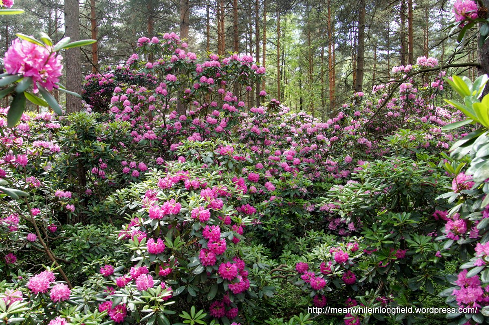
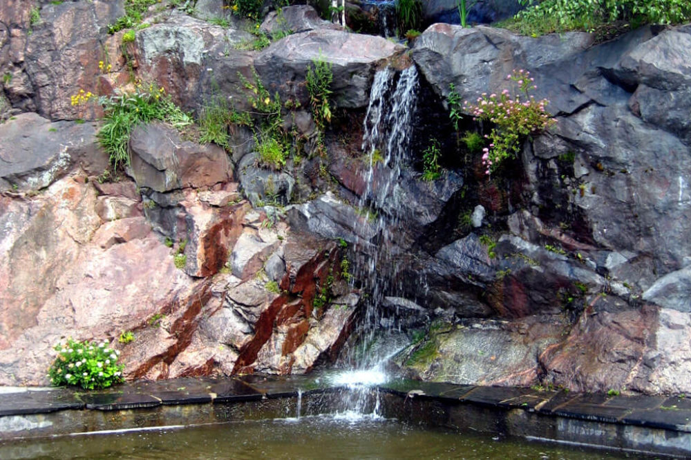
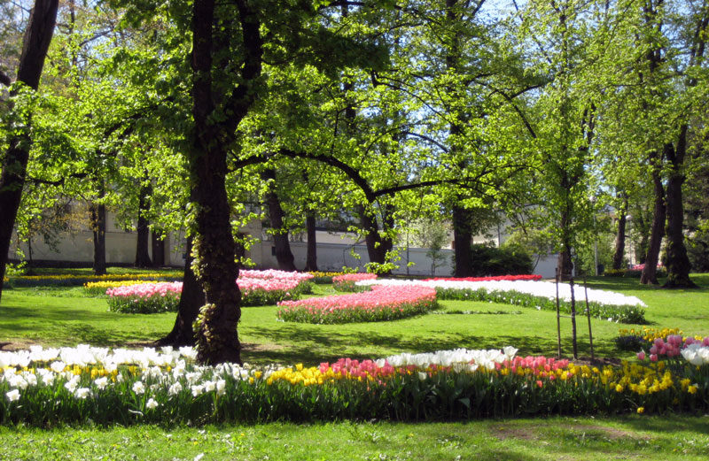
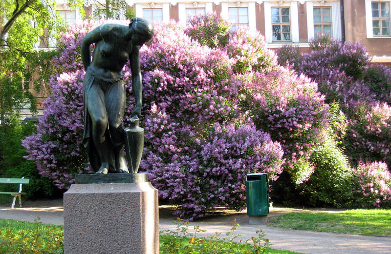

Puistot
Alppiruusupuisto
"Haagan Alppiruusupuisto eli tuttavallisesti Rodopuisto, on ainutlaatuinen helmi Helsingin puistojen kirjossa.Puisto on samanaikaisesti yleisölle avoin puisto ja yliopiston kasvinjalostuksen koealue."
Katso täältä lisää!Keskuspuisto

"Keskuspuisto on pohjoiseteläsuunnassa lähes kymmenen kilometrin pituinen metsäinen viheralue, joka alkaa keskustan tuntumasta Laaksosta ja päättyy Helsingin pohjoisrajalle Haltialaan ja Vantaanjoelle."
Katso täältä lisää!Josafatin kalliot
"Josafatin komeat kalliot Helsinginkadun ja Josafatinkadun välissä ovat kehys tälle kalliolaisten suosimalle auringonotto- ja piknikpuistolle. Se muodostaa Tauno Palon puiston kanssa viheraluekokonaisuuden."
Katso täältä lisää!Tähtitornin vuori
"Tähtitorninvuori eli Tähtitorninmäki on noin 30 metriä korkea kallioinen mäki Ullanlinnassa Eteläsataman vieressä. Mäki on suurimmaksi osaksi puistoa, mutta siellä sijaitsee myös muutamia rakennuksia kuten esim. vuonna 1834 valmistunut Helsingin Observatorio."
Katso täältä lisää!Tove Janssonin puisto
"Katajanokanpuiston istutustyöt aloitettiin vuonna 1897 kaupunginpuutarhuri Svante Olssonin piirustusten pohjalta. Elokuussa 2014 puiston nimi muutettiin Tove Janssonin puistoksi, kun taiteilijan syntymästä oli kulunut 100 vuotta."
Katso täältä lisää!Viikin Arboterum

"Viikin arboretum, puulajipuisto, on perustettu vuonna 1969 pääasiassa dendrologian eli puulajitieteen tutkimusta ja opetusta varten. Samalla se on osa kaupungin erittäin suosittua Vanhankaupunginlahden ulkoilu- ja virkistysaluetta."
Katso täältä lisää!